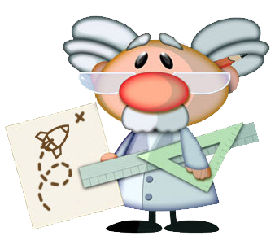
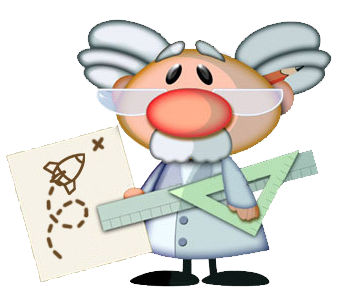
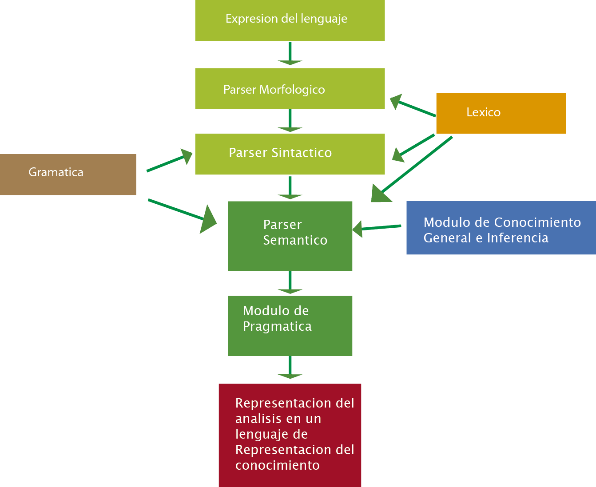

Sistemas Expertos
Dr. Abuse
* Misaico Palomino Christian * Huancahuari Mendoza Pamela * Barreto Benavides Sheyla * De la Cruz Zaida * Elias Pallin Fabiola
Argumento Historico

* En febrero de 1992 en Valencia., se creo el primer
chatbot o programa de inteligencia artificial en español.
CARACTERISTICAS

* Robot de charla con una personalidad definida
* Tecnicas de IA : Analisis Lexico, Sintactico, Semantico, Pragmatico.
* Base de conocimientos con más de 21.000 claves y más de 41.000 frases de respuesta.
* Tiene capacidad para abrir, guardar e imprimir las consultas.
* Recuerda datos sobre el usuario y otros temas tratados anteriormente.
* Permite al usuario conversar sobre temas serios utilizando el Modo Autoayuda.
* Permite incrementar la base de conocimientos utilizando el Modo Entrenamiento.
* Responde mediante Síntesis de voz.
* Ejecuta programas, navega por la Red y envía e-mail mediante la Ejecución de órdenes, todo en lenguaje natural.
* Efectúa Operaciones matemáticas sencillas o científicas.
* Reconoce y puede Conversar con otros robots de charla usando el Portapapeles.

MODO AUTOAYUDA
- * Permite que este bot se pueda usar en charlas del tipo psicoterapeutica.
- * Se accede y configura en el menu
- * Se puede elegir el numero maximo de respuestas
- * Se puede obtener un resultado de la conversacion
PROCESAMIENTO DEL LENGUAJE NATURAL
Es una disciplina de la Inteligencia Artificial que se ocupa de la formulación e investigación de mecanismos computacionales para la comunicación entre personas y máquinas mediante el uso de Lenguajes Naturales.
Aplicaciones del Procesamiento del Lenguaje Natural
Comprensión del lenguaje
Recuperación de la información
Extracción de la información
Búsqueda de respuestas
Generación de discurso
Traducción automática
Reconstrucción de discurso
Reconocimiento del habla
Síntesis de voz

Kas 2001 vs Dr House
Usuario > hola, hola...
Kas > hola
Usuario > hacia tiempo que no te veia por aqui.
Kas > si, hace ya tiempo de eso.
Usuario > ¿que quieres decir con que hace ya tiempo de eso?
Kas > no estoy seguro
Usuario > no comprendo como la gente no esta segura de ese tipo de cosas.
Kas > tienes que ponerte en su lugar
Usuario > yo si. y tu, ¿tienes que ponerme en su lugar?
Kas > bien
Gracias